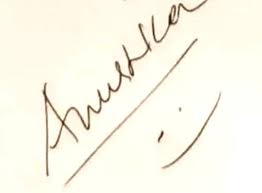

While filming her debut film Super, the director Puri Jagannadh and producer Nagarjuna were keen for Shetty to have a screen name as they felt her real name Sweety may not be appealing to the audience. While mulling over different names, they came across Anushka Manchanda who was singing one of the songs in the film. They liked her first name and decided to adopt Anushka as the screen name for Shetty's film career.
